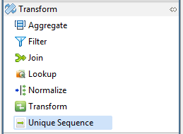
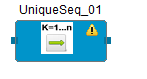

Accelero Help
Accelero Help
Unique Sequence
Accelero Release Version 1.0
Unique Sequence as the name suggests accepts a field name and generates unique sequence of integer values.
The Unique Sequence component can be easily distinguished in the component palette.

An enlarged version of the same is depicted when dragged on the canvas.

For further reference click on the links below: